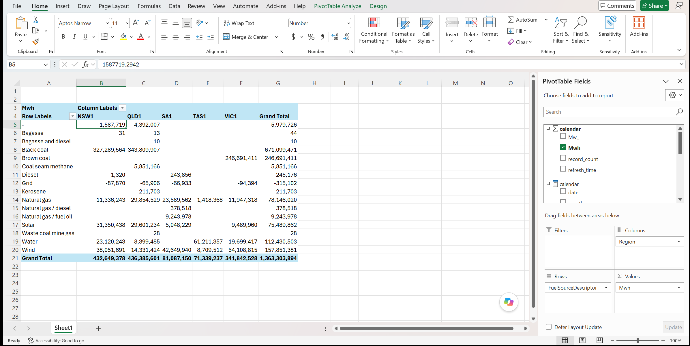
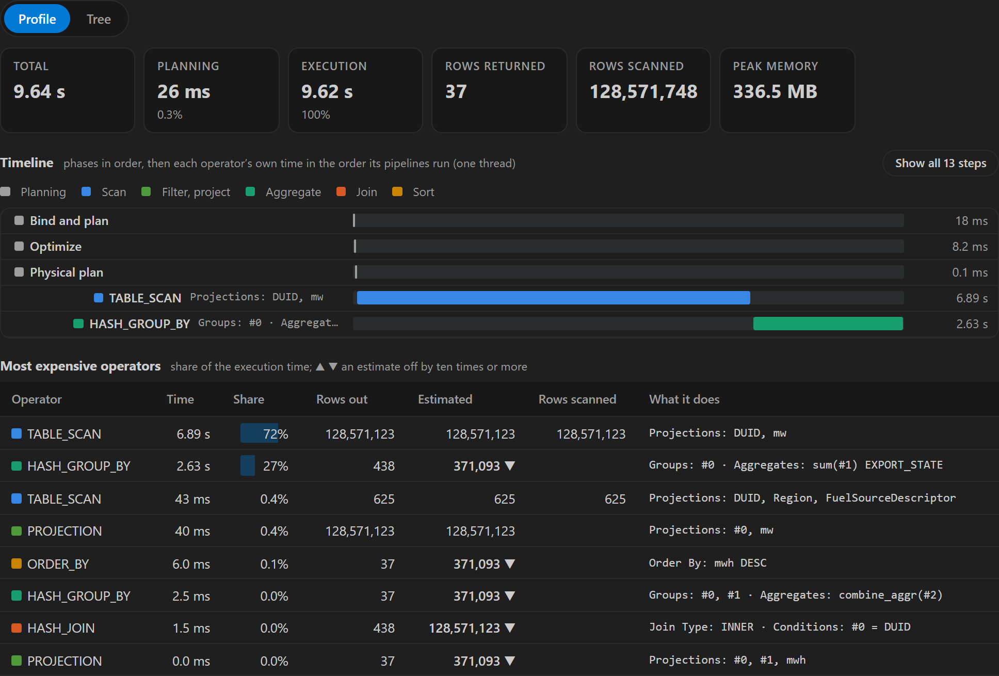

Features
Browse OneLake and query any table, file or semantic model with SQL, on your machine, read only and offline. The same in the app and in the VS Code extension.
One SQL name for every table and model
A query can join tables from different items and workspaces with no setup. A Power BI semantic model is queried like a table, and AGG("measure") computes a measure.
SELECT * FROM lakehouse.demo.data.aemo.duid;
SELECT duid.Region, AGG("Mwh")
FROM semanticmodel.demo.DL GROUP BY ALL;Semantic models: diagram and pivot
See a model's tables and relationships. Drag fields to build a table or a chart, and see the SQL behind it.


Open in Excel
A button on a model's Model page opens a new Excel workbook with a PivotTable connected to the model. It runs on your machine, so it also works offline. Windows only.

Export to Fabric
Publishes a model's Report as a Fabric app. People open it in the browser after signing in to Fabric, and use its tiles and slicers there with nothing to install.
An app made from a Power BI semantic model queries that model as it is. Nothing is asked, and nothing is written to the model.
An app made from a model file runs DuckDB in the browser, which reads the lakehouse's tables. To put it on a Power BI semantic model instead, create the semantic model from the file first, then export that model.
The app is saved on your computer as one .fabricapp file. Double-click it to open it again in OneLake Studio, on its Report page. A model file, an Ossie .yaml or a .bim, opens from your computer too.
Table stats and history
Click a table to see its columns, row count, first rows, and the stats and history of a Delta or Iceberg table.


Query plans
A query's plan shows how long each step took and which operators cost the most.

Claude Code and GitHub Copilot can use it too. After one command, they can list your data, read a model's measures and compute them.
It works offline. Anything you have read can be browsed, queried and pivoted without internet.
Read only. The two exceptions are Export to Fabric, which is experimental, and Upload Files. Both ask you first.